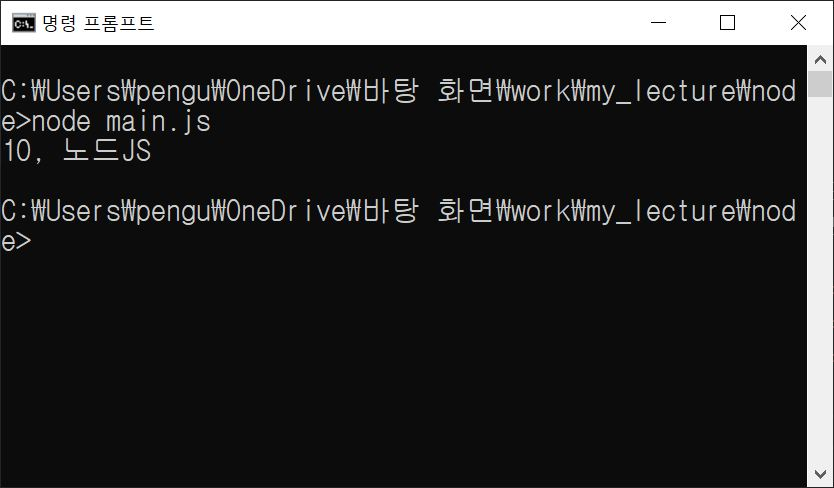

규모가 큰 코드의 내용을 모듈화하여(분할하여) 코드 관리가 용이해지도록 할 수 있다. 모듈화된 프로그램을 만들 때는 모듈이 될 파일과 모듈을 불러와서 사용할 파일이 각각 필요하다.
1 2 3 4 5 6 7 | //variables.js const number = 10; const word = "노드JS"; module.exports = { number, word } | >
1 2 3 4 5 6 7 8 9 | //myFunc.js const { number, word } = require('./variables'); // variables.js 로부터 변수 두 개를 가져온다. const sayThings = () => { return `${number}, ${word}` } module.exports = sayThings; |
1 2 3 4 | //main.js const sayThings = require('./myFunc'); console.log(sayThings()); |
위와 같이 분리된 모듈들을 main.js를 실행함으로써 하나의 프로그램처럼 사용할 수 있다.
